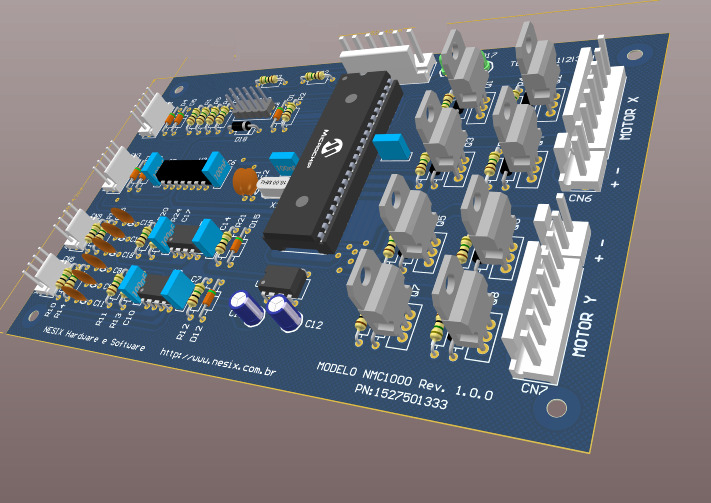
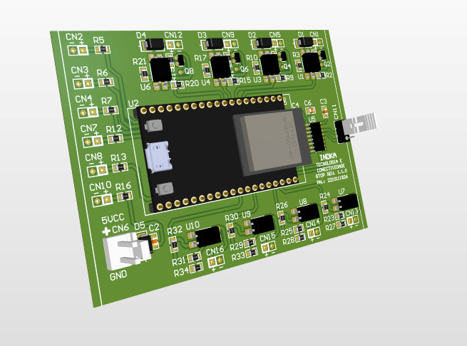
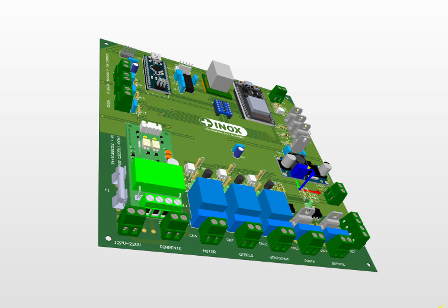
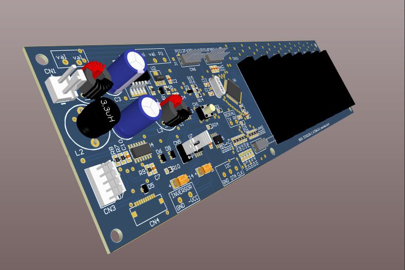
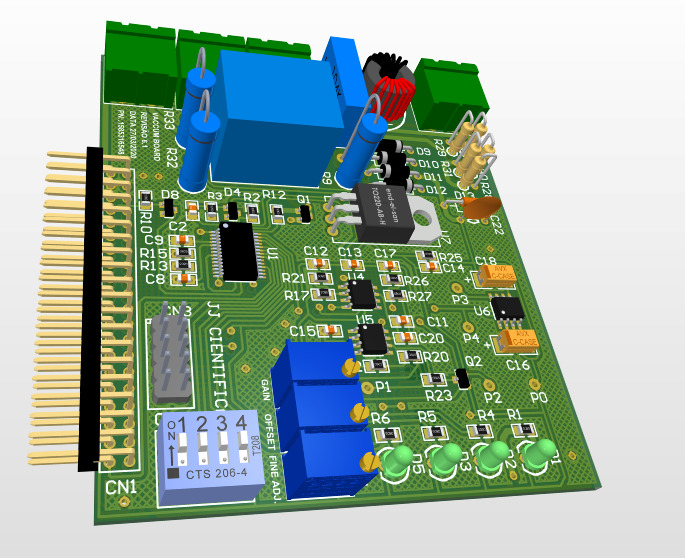
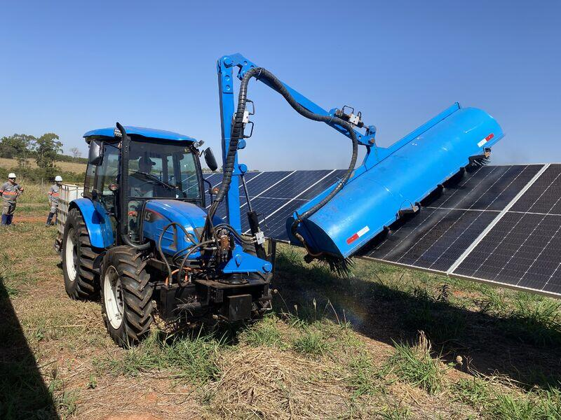
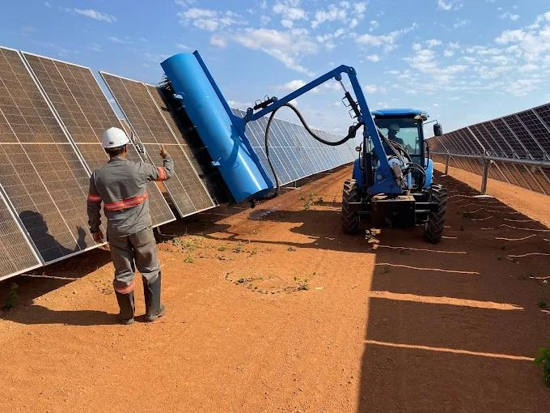

Desenvolvimento completo
Produto pensado do circuito ao aplicativo, com integração real entre as partes.
Desenvolvemos hardware, firmware, software, aplicativos e placas eletrônicas para empresas que precisam automatizar processos, monitorar equipamentos e criar produtos tecnológicos confiáveis.
Monitoramento, alertas e comandos remotos pelo celular.
Desenvolvimento eletrônico, sistemas embarcados, software, aplicativos e placas de circuito impresso para empresas que precisam de execução técnica séria.
Projeto de circuitos eletrônicos, escolha de componentes, definição de arquitetura, sensores, fontes, interfaces de comunicação e integração com sistemas físicos.
Programação de microcontroladores, ESP32, comunicação MQTT, Wi-Fi, Bluetooth, Modbus, CAN, displays, sensores, atuadores e sistemas embarcados confiáveis.
Sistemas para controle, visualização de dados, dashboards, bancos de dados, comunicação com equipamentos e automação de processos.
Aplicativos para monitorar, controlar e configurar equipamentos remotamente, permitindo que o cliente acompanhe tudo na palma da mão.
Desenvolvimento de PCB, protótipos, revisão de layout, organização de sinais, redução de ruído, preparação para fabricação e montagem.
Analisamos projetos de hardware, firmware ou software que não estão funcionando corretamente e ajudamos a encontrar falhas, corrigir problemas e melhorar a confiabilidade.
Desenvolvemos equipamentos eletrônicos inteligentes capazes de enviar dados pela internet, gerar alertas, receber comandos remotos e permitir acompanhamento pelo celular. Isso reduz deslocamentos, evita perdas, melhora o controle operacional e aumenta a eficiência do negócio.
Exemplos visuais de soluções técnicas, sistemas embarcados, automação, eletrônica e equipamentos desenvolvidos sob medida.





A Taquionica também desenvolve soluções de automação aplicadas ao campo e à geração de energia. Um dos exemplos é a automação de trator para limpeza de placas solares, uma solução que ajuda a manter a eficiência dos painéis, reduz trabalho manual e melhora a produtividade da operação.
Falar com especialista

Muitos projetos eletrônicos falham não porque a ideia é ruim, mas porque existem detalhes técnicos escondidos: ruído elétrico, alimentação mal dimensionada, firmware bloqueante, comunicação instável, sensores mal filtrados, layout de placa inadequado ou arquitetura de software mal planejada.
A Taquionica ajuda a diagnosticar, corrigir e melhorar projetos que já existem, reduzindo tempo perdido e aumentando a chance de transformar o protótipo em produto confiável.
Converse com a Taquionica. Podemos avaliar seu projeto, propor o melhor caminho técnico e desenvolver uma solução conectada, confiável e pronta para uso real.
Falar com a Taquionica no WhatsApp